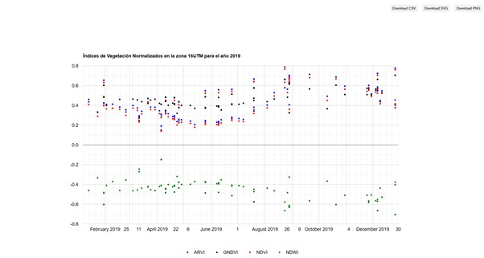
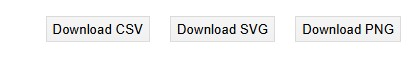
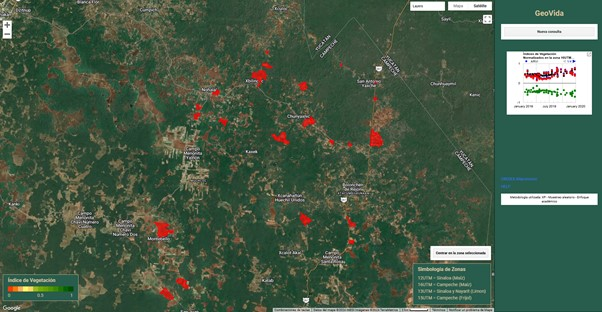
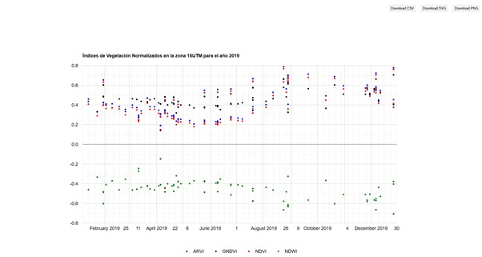
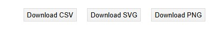
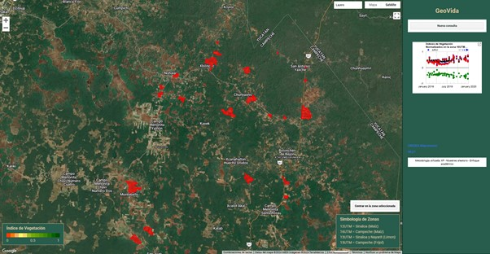

1. Se ingresa al Geoportal "GeoVida"
 2. Se selecciona el tipo de indice que se desea vizsualizar en el mapa
2. Se selecciona el tipo de indice que se desea vizsualizar en el mapa
 3. Se selecciona la zona de interés de acuerdo a lo que se visualiza a continuación
3. Se selecciona la zona de interés de acuerdo a lo que se visualiza a continuación
 4. Para la selección de zona se visualiza el recuadro de Simbología de Zonas
4. Para la selección de zona se visualiza el recuadro de Simbología de Zonas
 5. Se selecciona un año de los que se muestran en la lista
5. Se selecciona un año de los que se muestran en la lista
 6. Despues de que se selecciona el año debe aparecer una pantalla como la siguiente
6. Despues de que se selecciona el año debe aparecer una pantalla como la siguiente
 7. En la esquina superior de la grafica aparecerá un icono donde la grafica se mostrará en otra pestaña

8. En la esquina superior derecha aparecen los 3 formatos de descarga

9. Para visualizar la zona seleccionada se puede hacer zoom y identificar las áreas del cultivo

10.
7. En la esquina superior de la grafica aparecerá un icono donde la grafica se mostrará en otra pestaña

8. En la esquina superior derecha aparecen los 3 formatos de descarga

9. Para visualizar la zona seleccionada se puede hacer zoom y identificar las áreas del cultivo

10.
11.
12.
13.
14.Dentro de la pagina tambien podemos encontrar un link que dirige a la pagina del CREDES Atlacomulco.